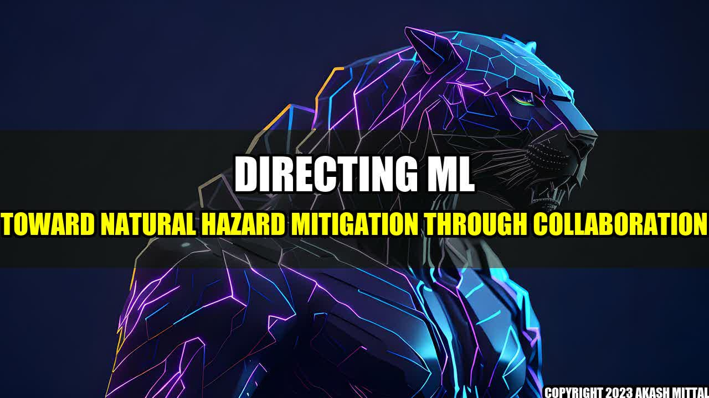

Directing ML toward Natural Hazard Mitigation through Collaboration

On March 11, 2011, the Great East Japan Earthquake and tsunami hit the coast of Japan, causing widespread devastation and loss of life. In the aftermath of the disaster, the importance of collaboration in natural hazard mitigation became painfully clear. The disaster had far-reaching impacts on different sectors, and it became clear that no single organization or individual could handle it alone.
This is where machine learning (ML) comes in. By leveraging ML techniques, we can tackle natural hazards in a collaborative manner, bringing together different stakeholders with different skill sets to work toward a common goal. Some of the ways in which ML can be directed toward natural hazard mitigation through collaboration include the following:
- Improving Early Warning Systems: ML techniques can be used to analyze large datasets and detect patterns that could indicate the occurrence of a natural hazard. By analyzing data from sources such as weather satellites, social media, and ground sensors, ML algorithms can provide early warning signals, allowing communities to take action and mitigate the threat. An example of this is the Flood Early Warning System of the Hydrologic Research Center in California, which uses ML algorithms to predict river runoff and flash floods.
- Enhancing Disaster Response: When a natural disaster strikes, collaboration between different stakeholders is crucial in providing an effective response. ML algorithms can enable faster and more accurate decision-making by analyzing real-time data and providing insights to stakeholders. For example, the National Oceanic and Atmospheric Administration (NOAA) uses ML algorithms to analyze real-time data from weather satellites and provide accurate storm tracking and weather forecasting to disaster response teams.
- Improving Post-Disaster Recovery: After a natural disaster, it is important to assess the extent of the damage and plan recovery efforts. ML algorithms can analyze satellite imagery and other data to give a comprehensive understanding of the damage and help prioritize recovery efforts. For example, after the 2015 earthquake in Nepal, Facebook worked with the Humanitarian OpenStreetMap Team to create high-resolution satellite maps of affected areas, which were used to identify areas of damage and plan recovery efforts.
Collaboration is key in directing ML toward natural hazard mitigation. By bringing together experts from different fields, we can develop comprehensive solutions that address the complex challenges posed by natural hazards. With ML techniques, we can harness the power of data to build smarter and more resilient communities that can better withstand natural hazards.
References and Further Readings
Hashtags
- #machinelearning
- #naturalhazards
- #collaboration
- #mitigation
- #disastermanagement
Social
Share on Twitter Share on LinkedIn